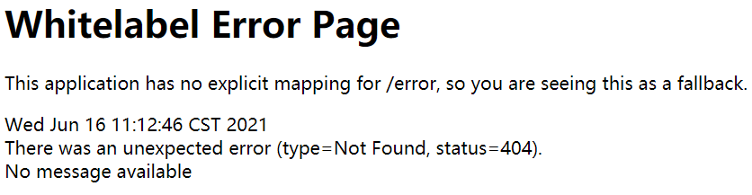

Spring Boot默认异常处理
在日常的 Web 开发中，会经常遇到大大小小的异常，此时往往需要一个统一的异常处理机制，来保证客户端能接收较为友好的提示。Spring Boot 同样提供了一套默认的异常处理机制，本节将对它进行详细的介绍。
Spring Boot 默认异常处理机制
Spring Boot 提供了一套默认的异常处理机制，一旦程序中出现了异常，Spring Boot 会自动识别客户端的类型（浏览器客户端或机器客户端），并根据客户端的不同，以不同的形式展示异常信息。1. 对于浏览器客户端而言，Spring Boot 会响应一个“ whitelabel”错误视图，以 HTML 格式呈现错误信息，如图 1；

图1：Spring Boot 默认错误白页
图1：Spring Boot 默认错误白页
2. 对于机器客户端而言，Spring Boot 将生成 JSON 响应，来展示异常消息。
{
"timestamp": "2021-07-12T07:05:29.885+00:00",
"status": 404,
"error": "Not Found",
"message": "No message available",
"path": "/m1ain.html"
}
Spring Boot 异常处理自动配置原理
Spring Boot 通过配置类 ErrorMvcAutoConfiguration 对异常处理提供了自动配置，该配置类向容器中注入了以下 4 个组件。- ErrorPageCustomizer：该组件会在在系统发生异常后，默认将请求转发到“/error”上。
- BasicErrorController：处理默认的“/error”请求。
- DefaultErrorViewResolver：默认的错误视图解析器，将异常信息解析到相应的错误视图上。
- DefaultErrorAttributes：用于页面上共享异常信息。
下面，我们依次对这四个组件进行详细的介绍。
ErrorPageCustomizer
ErrorMvcAutoConfiguration 向容器中注入了一个名为 ErrorPageCustomizer 的组件，它主要用于定制错误页面的响应规则。
@Bean
public ErrorPageCustomizer errorPageCustomizer(DispatcherServletPath dispatcherServletPath) {
return new ErrorPageCustomizer(this.serverProperties, dispatcherServletPath);
}
ErrorPageCustomizer 通过 registerErrorPages() 方法来注册错误页面的响应规则。当系统中发生异常后，ErrorPageCustomizer 组件会自动生效，并将请求转发到 “/error”上，交给 BasicErrorController 进行处理，其部分代码如下。
@Override
public void registerErrorPages(ErrorPageRegistry errorPageRegistry) {
//将请求转发到 /errror（this.properties.getError().getPath()）上
ErrorPage errorPage = new ErrorPage(this.dispatcherServletPath.getRelativePath(this.properties.getError().getPath()));
// 注册错误页面
errorPageRegistry.addErrorPages(errorPage);
}
BasicErrorController
ErrorMvcAutoConfiguration 还向容器中注入了一个错误控制器组件 BasicErrorController，代码如下。
@Bean
@ConditionalOnMissingBean(value = ErrorController.class, search = SearchStrategy.CURRENT)
public BasicErrorController basicErrorController(ErrorAttributes errorAttributes,
ObjectProvider<ErrorViewResolver> errorViewResolvers) {
return new BasicErrorController(errorAttributes, this.serverProperties.getError(),
errorViewResolvers.orderedStream().collect(Collectors.toList()));
}
BasicErrorController 的定义如下。
//BasicErrorController 用于处理 “/error” 请求
@Controller
@RequestMapping("${server.error.path:${error.path:/error}}")
public class BasicErrorController extends AbstractErrorController {
......
/**
* 该方法用于处理浏览器客户端的请求发生的异常
* 生成 html 页面来展示异常信息
* @param request
* @param response
* @return
*/
@RequestMapping(produces = MediaType.TEXT_HTML_VALUE)
public ModelAndView errorHtml(HttpServletRequest request, HttpServletResponse response) {
//获取错误状态码
HttpStatus status = getStatus(request);
//getErrorAttributes 根据错误信息来封装一些 model 数据，用于页面显示
Map<String, Object> model = Collections
.unmodifiableMap(getErrorAttributes(request, getErrorAttributeOptions(request, MediaType.TEXT_HTML)));
//为响应对象设置错误状态码
response.setStatus(status.value());
//调用 resolveErrorView() 方法，使用错误视图解析器生成 ModelAndView 对象（包含错误页面地址和页面内容）
ModelAndView modelAndView = resolveErrorView(request, response, status, model);
return (modelAndView != null) ? modelAndView : new ModelAndView("error", model);
}
/**
* 该方法用于处理机器客户端的请求发生的错误
* 产生 JSON 格式的数据展示错误信息
* @param request
* @return
*/
@RequestMapping
public ResponseEntity<Map<String, Object>> error(HttpServletRequest request) {
HttpStatus status = getStatus(request);
if (status == HttpStatus.NO_CONTENT) {
return new ResponseEntity<>(status);
}
Map<String, Object> body = getErrorAttributes(request, getErrorAttributeOptions(request, MediaType.ALL));
return new ResponseEntity<>(body, status);
}
......
}
Spring Boot 通过 BasicErrorController 进行统一的错误处理（例如默认的“/error”请求）。Spring Boot 会自动识别发出请求的客户端的类型（浏览器客户端或机器客户端），并根据客户端类型，将请求分别交给 errorHtml() 和 error() 方法进行处理。
| 返回值类型 | 方法声明 | 客户端类型 | 错误信息返类型 |
|---|---|---|---|
| ModelAndView | errorHtml(HttpServletRequest request, HttpServletResponse response) | 浏览器客户端 | text/html（错误页面） |
| ResponseEntity<Map<String, Object>> | error(HttpServletRequest request) | 机器客户端（例如安卓、IOS、Postman 等等） | JSON |
在 errorHtml() 方法中会调用父类（AbstractErrorController）的 resolveErrorView() 方法，代码如下。换句话说，当使用浏览器访问出现异常时，会进入 BasicErrorController 控制器中的 errorHtml() 方法进行处理，当使用安卓、IOS、Postman 等机器客户端访问出现异常时，就进入error() 方法处理。
protected ModelAndView resolveErrorView(HttpServletRequest request, HttpServletResponse response, HttpStatus status,
Map<String, Object> model) {
//获取容器中的所有的错误视图解析器来处理该异常信息
for (ErrorViewResolver resolver : this.errorViewResolvers) {
//调用错误视图解析器的 resolveErrorView 解析到错误视图页面
ModelAndView modelAndView = resolver.resolveErrorView(request, status, model);
if (modelAndView != null) {
return modelAndView;
}
}
return null;
}
从上述源码可以看出，在响应页面的时候，会在父类的 resolveErrorView 方法中获取容器中所有的 ErrorViewResolver 对象（错误视图解析器，包括 DefaultErrorViewResolver 在内），一起来解析异常信息。
DefaultErrorViewResolver
ErrorMvcAutoConfiguration 还向容器中注入了一个默认的错误视图解析器组件 DefaultErrorViewResolver，代码如下。
@Bean
@ConditionalOnBean(DispatcherServlet.class)
@ConditionalOnMissingBean(ErrorViewResolver.class)
DefaultErrorViewResolver conventionErrorViewResolver() {
return new DefaultErrorViewResolver(this.applicationContext, this.resources);
}
当发出请求的客户端为浏览器时，Spring Boot 会获取容器中所有的 ErrorViewResolver 对象（错误视图解析器），并分别调用它们的 resolveErrorView() 方法对异常信息进行解析，其中自然也包括 DefaultErrorViewResolver（默认错误信息解析器）。
DefaultErrorViewResolver 的部分代码如下。
public class DefaultErrorViewResolver implements ErrorViewResolver, Ordered {
private static final Map<HttpStatus.Series, String> SERIES_VIEWS;
static {
Map<HttpStatus.Series, String> views = new EnumMap<>(HttpStatus.Series.class);
views.put(Series.CLIENT_ERROR, "4xx");
views.put(Series.SERVER_ERROR, "5xx");
SERIES_VIEWS = Collections.unmodifiableMap(views);
}
......
@Override
public ModelAndView resolveErrorView(HttpServletRequest request, HttpStatus status, Map<String, Object> model) {
//尝试以错误状态码作为错误页面名进行解析
ModelAndView modelAndView = resolve(String.valueOf(status.value()), model);
if (modelAndView == null && SERIES_VIEWS.containsKey(status.series())) {
//尝试以 4xx 或 5xx 作为错误页面页面进行解析
modelAndView = resolve(SERIES_VIEWS.get(status.series()), model);
}
return modelAndView;
}
private ModelAndView resolve(String viewName, Map<String, Object> model) {
//错误模板页面，例如 error/404、error/4xx、error/500、error/5xx
String errorViewName = "error/" + viewName;
//当模板引擎可以解析这些模板页面时，就用模板引擎解析
TemplateAvailabilityProvider provider = this.templateAvailabilityProviders.getProvider(errorViewName,
this.applicationContext);
if (provider != null) {
//在模板能够解析到模板页面的情况下，返回 errorViewName 指定的视图
return new ModelAndView(errorViewName, model);
}
//若模板引擎不能解析，则去静态资源文件夹下查找 errorViewName 对应的页面
return resolveResource(errorViewName, model);
}
private ModelAndView resolveResource(String viewName, Map<String, Object> model) {
//遍历所有静态资源文件夹
for (String location : this.resources.getStaticLocations()) {
try {
Resource resource = this.applicationContext.getResource(location);
//静态资源文件夹下的错误页面，例如error/404.html、error/4xx.html、error/500.html、error/5xx.html
resource = resource.createRelative(viewName + ".html");
//若静态资源文件夹下存在以上错误页面，则直接返回
if (resource.exists()) {
return new ModelAndView(new DefaultErrorViewResolver.HtmlResourceView(resource), model);
}
} catch (Exception ex) {
}
}
return null;
}
......
}
DefaultErrorViewResolver 解析异常信息的步骤如下：
- 根据错误状态码（例如 404、500、400 等），生成一个错误视图 error/status，例如 error/404、error/500、error/400。
- 尝试使用模板引擎解析 error/status 视图，即尝试从 classpath 类路径下的 templates 目录下，查找 error/status.html，例如 error/404.html、error/500.html、error/400.html。
- 若模板引擎能够解析到 error/status 视图，则将视图和数据封装成 ModelAndView 返回并结束整个解析流程，否则跳转到第 4 步。
- 依次从各个静态资源文件夹中查找 error/status.html，若在静态文件夹中找到了该错误页面，则返回并结束整个解析流程，否则跳转到第 5 步。
- 将错误状态码（例如 404、500、400 等）转换为 4xx 或 5xx，然后重复前 4 个步骤，若解析成功则返回并结束整个解析流程，否则跳转第 6 步。
- 处理默认的 “/error ”请求，使用 Spring Boot 默认的错误页面（Whitelabel Error Page）。
DefaultErrorAttributes
ErrorMvcAutoConfiguration 还向容器中注入了一个组件默认错误属性处理工具 DefaultErrorAttributes，代码如下。
@Bean
@ConditionalOnMissingBean(value = ErrorAttributes.class, search = SearchStrategy.CURRENT)
public DefaultErrorAttributes errorAttributes() {
return new DefaultErrorAttributes();
}
DefaultErrorAttributes 是 Spring Boot 的默认错误属性处理工具，它可以从请求中获取异常或错误信息，并将其封装为一个 Map 对象返回，其部分代码如下。
public class DefaultErrorAttributes implements ErrorAttributes, HandlerExceptionResolver, Ordered {
......
@Override
public Map<String, Object> getErrorAttributes(WebRequest webRequest, ErrorAttributeOptions options) {
Map<String, Object> errorAttributes = getErrorAttributes(webRequest, options.isIncluded(Include.STACK_TRACE));
if (!options.isIncluded(Include.EXCEPTION)) {
errorAttributes.remove("exception");
}
if (!options.isIncluded(Include.STACK_TRACE)) {
errorAttributes.remove("trace");
}
if (!options.isIncluded(Include.MESSAGE) && errorAttributes.get("message") != null) {
errorAttributes.remove("message");
}
if (!options.isIncluded(Include.BINDING_ERRORS)) {
errorAttributes.remove("errors");
}
return errorAttributes;
}
private Map<String, Object> getErrorAttributes(WebRequest webRequest, boolean includeStackTrace) {
Map<String, Object> errorAttributes = new LinkedHashMap<>();
errorAttributes.put("timestamp", new Date());
addStatus(errorAttributes, webRequest);
addErrorDetails(errorAttributes, webRequest, includeStackTrace);
addPath(errorAttributes, webRequest);
return errorAttributes;
}
......
}
在 Spring Boot 默认的 Error 控制器（BasicErrorController）处理错误时，会调用 DefaultErrorAttributes 的 getErrorAttributes() 方法获取错误或异常信息，并封装成 model 数据（Map 对象），返回到页面或 JSON 数据中。该 model 数据主要包含以下属性：
- timestamp：时间戳；
- status：错误状态码
- error：错误的提示
- exception：导致请求处理失败的异常对象
- message：错误/异常消息
- trace： 错误/异常栈信息
- path:错误/异常抛出时所请求的URL路径
所有通过 DefaultErrorAttributes 封装到 model 数据中的属性，都可以直接在页面或 JSON 中获取。
关注公众号「站长严长生」，在手机上阅读所有教程，随时随地都能学习。内含一款搜索神器，免费下载全网书籍和视频。

微信扫码关注公众号